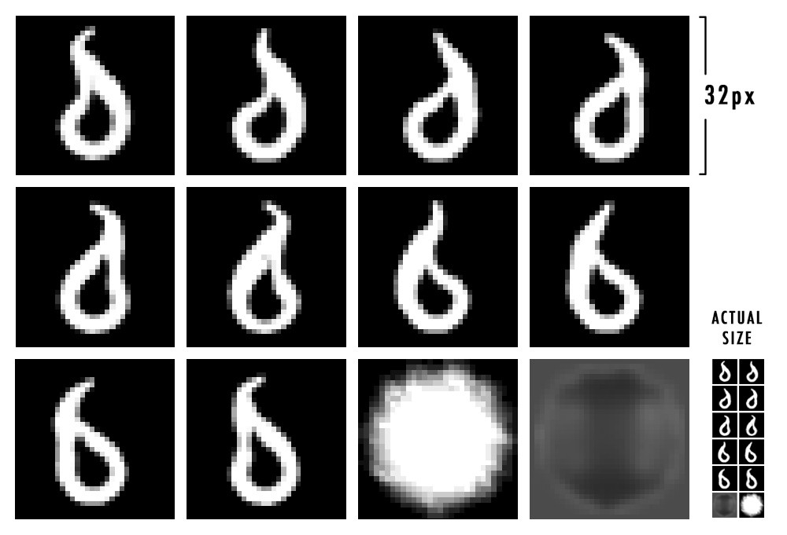
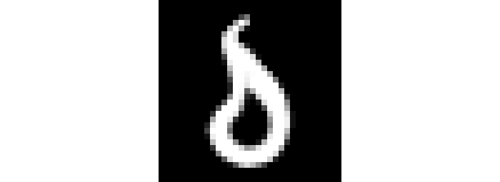
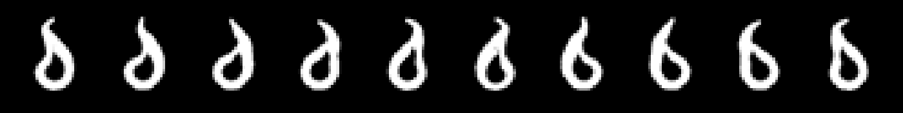
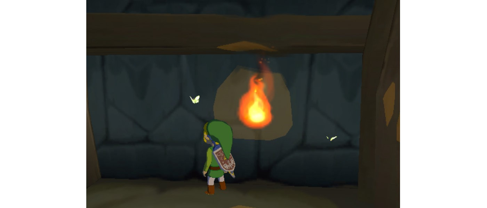
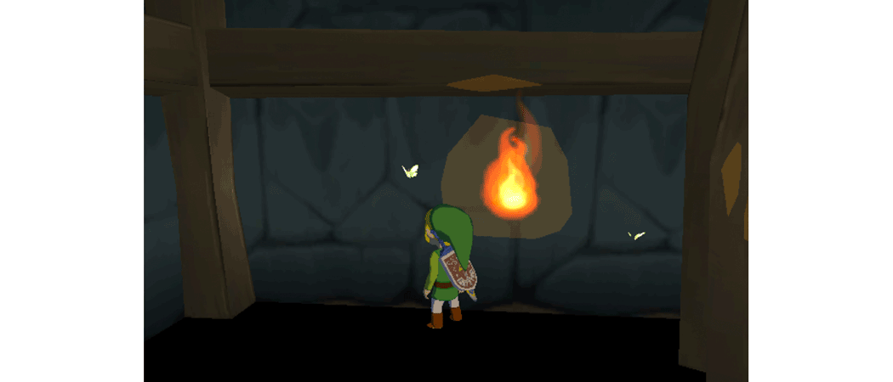
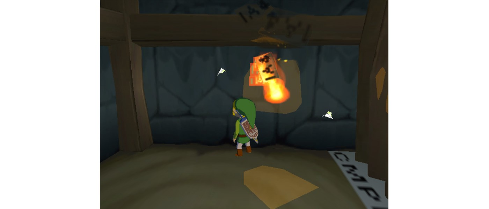
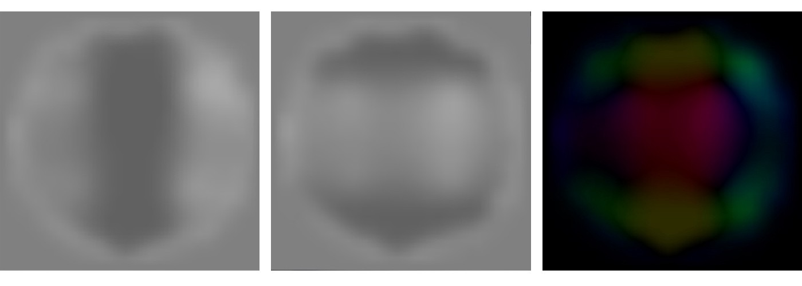

I had a lot of fun remaking this effect. Fire features so heavily throughout the game, and used in so many ways, so it was so interesting to see how it was built. I also learnt a lot about the gamecube while making this analysis, so I actually wrote it twice!
Below is a capture of fire from the game.
And here is my recreation using Threejs.
One thing I was surprised I hadn’t noticed before is that there are actually two types of fire in the game!
Or at least that’s what I’m calling it. This version is used for torches or fireplaces, as well as some particle effects. It’s lighter — compiled of fewer flames that always face the camera.
The technique for making quads (rectangular geometry) always face the camera is called billboarding. Here is that technique illustrated more clearly in my demo.
As the camera moves in any direction, the quad always appears completely flat. This technique is usually used for particle effects and UI elements.
Dynamic fire is used in situations where the fire moves — like on a swinging lantern, or on one of Link’s lit sticks. This version doesn’t use billboarding, and instead is compiled of more quads, all facing in random directions to give the illusion of a full 3D geometry.
Another important difference is how the fire rotates and scales to react to the fire’s movement.
Below is my recreation of this second type of fire.
Both types are made up of the same three elements: fire, embers (the small particles shooting up from the flames), and haze (the warping distortion you can see above the fire). I will touch on all three.
The flames make up the bulk of the whole effect — they look like they’re being warped with some shader magic (had me fooled), but on closer inspection, they’re quite simple and clever.
I couldn’t believe my eyes when I saw how tiny these textures were. These mini textures are all that’s used in the fire effect for the whole game. I’ve enlarged them here — take note of the actual size at the bottom right.

For all of these textures, I have applied a black background instead of transparency for demonstration purposes. The two textures at the end are used for the embers and the haze effects, one for each.
The reason they could get away with such tiny textures is thanks to the default magnification filter, which, when sampling from a texture to a much larger region, linearly interpolates between the values. This stops it looking so pixellated, and instead makes it just look blurry, which is fairly indistinguishable in an effect such as this.
For the flame textures, I found them in no particular order (it was a bit like finding treasure in a sea of tiny textures), but once they were placed into what I presume is the right order, they make this cute little dance!

On the gamecube, it must have been more efficient (or just easier) to keep each flame in a separate file, and interchange these textures as the animation progressed. However, for the recreation, I stitched them all together into a sprite sheet and animated the texture coordinates to switch between them in the fragment shader. Here is the resulting sprite.

One interesting note about this game is that they use quads a lot. Today we would use point clouds or instanced geometry (as I have) as a way of reducing draw-calls, but either this wasn’t possible on the gamecube, or it just was more efficient to do without!

So they used a separate draw call for each individual flame, the benefit of which is that it allows me to step through them one by one in the Dolphin emulator — which was an amazing help for closely analysing the effect.
I created 8 quads in an instanced geometry, with slightly randomised scale, all stacked on top of one another.
An instanced geometry is where you tell the GPU to duplicate a geometry a number of times, and pass through extra attributes like scale and rotation to update each instance. This transformation step is done in the vertex shader, so it’s a bit trickier to set up, but worth the improved performance — you can see several examples of this using Threejs in my codepens at the end of this analysis.
As we saw from the textures above, they create an awesome frame animation of a wiggling flame, but this isn’t all they’ve added.
From the short capture above, and especially the isolated flames below, you can see how the flames scale up vertically and fade out, all while flipping through the texture frames.
I recreated this through animating the quads’ scale in the vertex shader, by passing in a life value of 0 to 1, and then using that to drive the scale and opacity. When combined with the random scale passed into each instance, the animation looks like this.
Using those single flame captures from above, I was able to sample the exact colours used for the effect — which is usually difficult with additive elements where the true value is blended with those behind it. I applied those colours to either the black or white region of the texture.
I made sure to apply additive blending, which turns those rather dull colours into the bright flame when combined. This creates a stunning amount of variance, as the different depths combine to make a whole range of colours.

If the flames alone weren’t proof enough for the use of additive blending, look at how the colour of the flame changes when the wall is removed and replaced above. This means that the fire effect would disappear on bright backgrounds. I’ve since noticed that the fire is only ever used in dark environments — not a single flame during the day!
Up until now, both types of fire have been identical. Here is where their implementations differ.
As previously mentioned, this fire version is unique as it features billboarding — where the quads always face the camera. Achieving this is as simple as copying the camera’s quaternion every frame onto the object itself, as such:
fire.quaternion.copy(camera.quaternion);A quaternion is a rotational value made up of four numbers. Why not just use XYZ Euler rotation? Because unlike Euler rotation, quaternions allow you to animate between two rotation values without problems.
The first thing to change for this version, apart from omitting the billboarding above, is to increase the number of instances from 8 to 12.
Then I added random rotation on the y axis, so that the quads all face in different directions. I also added some slight rotation in the other axes to mimic what I saw in the screen captures. The result is captured below.
Another unique aspect for this version is that the flame can be viewed from behind — so setting the material to double sided was necessary.
The last difference between the two versions is the dynamic fire’s ability to rotate and scale in reaction to its movement.
Instead of setting up a physics constraint and running it through a physics engine, which they might well have done, I used a simple little trick which achieves nearly the same result.
I create a second point, illustrated by the sphere above, and have it ease to the fire’s position, with an offset in the y axis. Then I calculate the angle between these two points, and rotate the object by it. I also use the distance between the two points to adjust the scale.
You can see this in effect below, where the code would execute every frame.
var offset = 0.4;
tipTarget.copy(fire.position);
tipTarget.y += offset;
tip.lerp(tipTarget, 0.1);
diff.copy(_tip);
diff.sub(fire.position);
var length = _diff.length();
// Set scale
fire.scale.y = length / offset;
// Set rotation
fire.quaternion.setFromUnitVectors(_y, _diff.normalize());Note that the transformations must be applied in this order, as the quaternion operation setFromUnitVectors requires normalised vectors, hence losing the length data needed to set the scale. The variable _y in this code snippet is a y axis vector — new THREE.Vector3(0, 1, 0).
To recreate the tiny particles, even though the game used a separate draw call for each ember (made up of individual quads), I instead used a tiny point cloud to improve performance. An added benefit of doing so is that the resulting square shapes rendered are billboarded by default.
I then mimicked a basic particle system, with each point starting near the base of the fire, animating up over time, fading out and then repeating the process.
I also randomised the size of each point slightly, and then applied the ember texture and a colour, and that’s it.
By far the most impressive part of the analysis, the heat haze above the flames looks like a classic case of a post-processing shader, but, the gamecube didn’t have fragment shaders. So how did they achieve this?
From analysing the frame below, you can make out the three IA4 codes (some texture reference codename), signifying the corners of 3 seperate quads, drifting up from the flames with some random rotation.

Onto these quads is mapped a copy of the rendered frame itself, along with a deformation texture to offset the pixels a bit, hence creating a post-processing effect with no complicated fragment shaders or effects system!
In just a little more detail, the haze quads are some of the last scene elements to be rendered. Just before of which the rendered image (frame buffer) up to that point is copied, and fed into their own material as a texture. This results in a texture consisting of a fully rendered scene minus the haze quads themselves.
This step actually posed some problems to the Dolphin emulator several years ago, and when it was solved, this great explanation was written.
Now recreating this in an identical fashion with Threejs would involve editing the render function’s source code, but a much simpler solution is just to render the scene twice — once with the haze quads hidden, and once with them added.
Below you can see this implemented, with default texture coordinates being used for the quads on purpose to illustrate what’s going on. Notice how the quads aren’t rendered within the quads themselves.
For the final effect, the screen’s coordinates are used instead of the quads’ own, making the texture on the quads match up perfectly with the scene behind them. This makes them blend seamlessly with the rest of the render, turning them completely invisible. That is, until we add a deformation map.
Below is the texture used to push the pixels around, creating the warping effect. It’s fairly crazy to think this texture is all that’s used to create the resulting effect.

Digging a little deeper, below the left and center images show the grey and alpha values of the image — interesting to note how they’re quite different! The grey value around the edges is obviously not meant to affect the pixels, otherwise we’d end up with hard edges, so we can assume this value will be read as 0. This means that anything darker will be negative, and brighter positive. In doing so for both images, this results in 4 directions of movement.
The image on the right is these 4 directions mapped to different colours.

These directional values are then passed into the shader and used to offset the texture coordinates.
Below is the final effect, however I’ve slightly brightened the texture to make out the quads and have also emphasised the warp strength.
This is such an interesting way of creating a post-processing effect I hadn’t considered before.
What’s even better is discovering the unique ways in which they were able to use this effect in the game to achieve different uses. For example, below, the entire fire effect is used with only the very tips being visible, the effect of which is that the soup is happily steaming away! In the wireframe view, you can make out the entire flames hiding under the floor.
That brings this analysis to a close. I’m always blown away by the texture use in this game, and this effect is no exception. With only a handful of tiny textures and a higher number of quads, to end up with such a huge effect is really impressive. This is a classic example of where technology meets artistry at that perfect cross-road.
Below you can find the full recreations of both the static and dynamic fire in separate Codepens.
Next article — Link’s Expressions